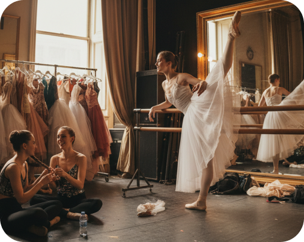
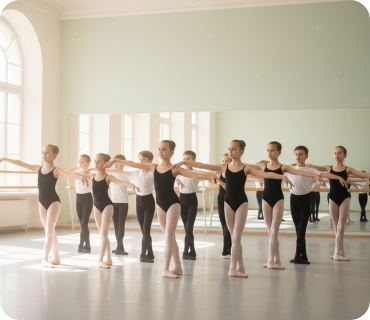
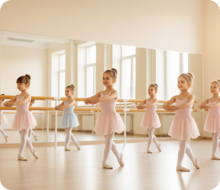

Профессиональная база
Педагоги опираются на классическую хореографическую школу и грамотную методику преподавания.
С учениками работают педагоги, которые соединяют профессиональную хореографическую базу, внимательное отношение и умение раскрывать потенциал в любом возрасте
В ГРАНДБАЛЕТ важно не только чему учат, но и как проходит обучение. Наши педагоги помогают детям, подросткам и взрослым развивать технику, осанку, музыкальность, дисциплину и уверенность в движении
Педагоги ГРАНДБАЛЕТ работают с учениками разного возраста и уровня подготовки: от первых занятий до подготовки к поступлению и сценической практике.
Каждый педагог не просто показывает движения, а объясняет технику, следит за безопасностью, помогает развивать тело постепенно и поддерживает интерес к занятиям.
Педагоги опираются на классическую хореографическую школу и грамотную методику преподавания.
Мы учитываем возраст, уровень подготовки, физические особенности и цель занятий.
Занятия проходят постепенно, без лишнего давления и перегрузки.
Ученики видят свой прогресс: в осанке, пластике, технике и уверенности
Педагог народно-сценического танца
Опыт: 10 лет
Педагог классического танца
Опыт: 10 лет
Педагог классического танца средних классов
Опыт: 10 лет
Педагог классического танца
Опыт: 10 лет
Педагог народно-сценического танца
Опыт: 10 лет
Педагог классического танца
Опыт: 10 лет
Педагог классического танца средних классов
Опыт: 10 лет
Педагог классического танца
Опыт: 10 лет
Педагог народно-сценического танца
Опыт: 10 лет
Педагог классического танца
Опыт: 10 лет
Педагог классического танца средних классов
Опыт: 10 лет
Педагог классического танца
Опыт: 10 лет
Педагог народно-сценического танца
Опыт: 10 лет
Педагог классического танца
Опыт: 10 лет
Педагог классического танца средних классов
Опыт: 10 лет
Педагог классического танца
Опыт: 10 лет
В балете важны точность, дисциплина и регулярность. Но для нас не менее важно, чтобы ученик чувствовал поддержку и понимал, зачем выполняет каждое движение.
Педагог помогает выстроить правильную технику, объясняет материал доступно и ведёт ученика от простого к сложному
Каждое движение разбирается постепенно, чтобы ученик понимал технику и чувствовал тело.
Педагог контролирует нагрузку, положение корпуса, работу стоп, спины и суставов.
Занятия строятся так, чтобы ученик видел прогресс и хотел продолжать обучение.
Мы помогаем раскрыть не только технику, но и выразительность, артистичность и характер движения
Детские занятия требуют особого подхода. Важно не только научить ребёнка движениям, но и удержать интерес, развить внимание, дисциплину и уверенность.
Педагоги ГРАНДБАЛЕТ учитывают возраст ребёнка, уровень подготовки и эмоциональное состояние. Обучение проходит постепенно, в понятной и поддерживающей атмосфере.
Помогаем ребёнку привыкнуть к занятиям, группе и педагогу
Формируем внимание и регулярность через спокойную, понятную работу
Поддерживаем ребёнка, чтобы он не боялся пробовать и выступать
Родители видят изменения в осанке, координации и собранности ребёнка
Взрослые приходят в балет с разными целями: улучшить осанку, укрепить тело, развить пластику, вернуться к танцу или попробовать то, о чём давно мечтали.
Наши педагоги помогают начать с комфортного уровня, объясняют базу простым языком и подбирают нагрузку под возможности ученика.
Не нужен опыт в балете — педагог постепенно введёт в базу.
Темп занятия подбирается с учётом уровня и самочувствия.
Улучшаем осанку, гибкость, силу и координацию
Учимся двигаться мягко, музыкально и выразительно.

Для учеников, которые планируют поступление в хореографические учебные заведения, особенно важна системная подготовка. Педагоги помогают укрепить базу, развить технику, подготовить тело и увереннее пройти творческие испытания
Что входит в подготовку
Педагоги объясняют материал доступно и помогают разобраться в технике

Даже в группе ученик получает корректировки и рекомендации

Мы не требуем невозможного, а помогаем постепенно расти
На занятиях можно задавать вопросы, пробовать и не бояться ошибок

Каждое занятие помогает двигаться вперёд — в технике, пластике и уверенности

Педагоги передают не только знания, но и уважение к искусству танца
Да, мы принимаем учеников любого уровня подготовки. У нас есть группы для начинающих как для детей, так и для взрослых. Педагоги подбирают нагрузку индивидуально.
Да, пробное занятие подходит для знакомства со школой и педагогом.
Администратор поможет подобрать комфортную группу.
Для первого занятия достаточно удобной формы.
Расписание зависит от направления и возраста ученика.
Запись на пробное занятие доступна через форму ниже.
Мы свяжемся с вами и уточним все детали.

Занятия по направлению «Название услуги» помогают развивать осанку, гибкость, координацию, силу, музыкальность и уверенность в движении. Программа подбирается с учётом возраста, уровня подготовки и цели ученика.
Обучение проходит в комфортном темпе под руководством педагогов ГРАНДБАЛЕТ. На занятиях ученики постепенно осваивают базовые элементы, укрепляют тело, развивают выразительность и учатся работать с музыкой.
Этот блок можно редактировать через админ-панель и использовать для SEO-текста на страницах услуг.

Поможем подобрать направление, школу и комфортную группу по возрасту и уровню подготовки